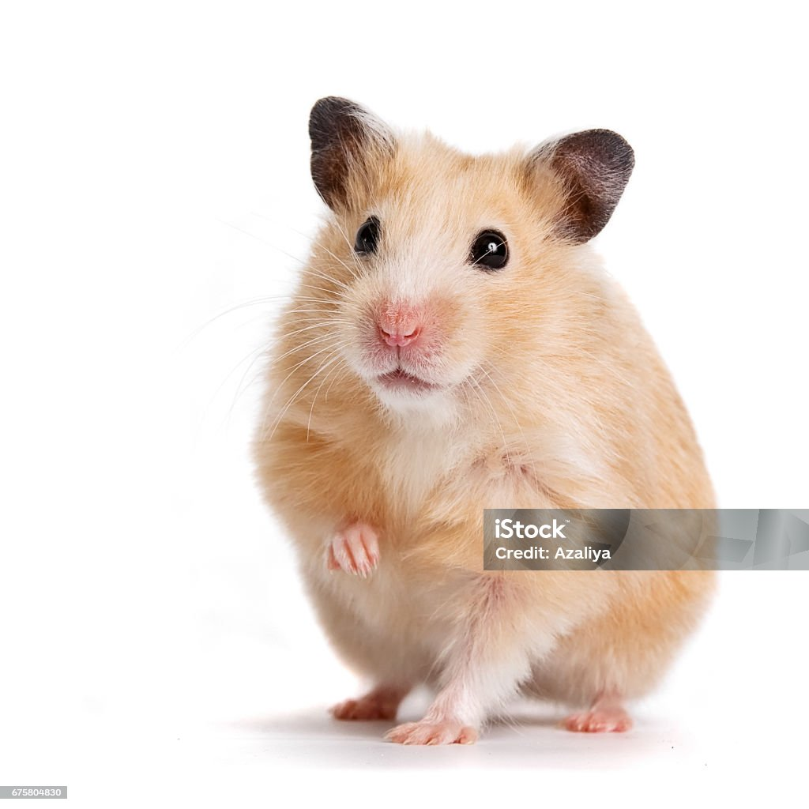

Minha Lista de Animal Preferidos
Cachorro

O mastim é uma raça de cachorro caracterizada por apresentar um corpo musculoso e robusto. A raça Mastim apresenta distintos tipos, variedades com característica próprias que, no entanto, compartilham elementos comuns. Vale destacar que algumas delas constituem raças independentes. Se voê quiser adotar um destes cachorros ou simplesmente deseja se informar sobre as suas variedades, não perca esta lista completa. Descubra no PeritoAnimal quantos tipos de Mastim existeme muitas curiosidades sobre eles. Boa leitura.
Hamster
Hamsters são pequenos roedores que conquistaram o coração de muitos tutores enquanto pet. Se esse é o animal doméstico que você deseja ter, saiba que você vai precisar atender uma pequena lista de compras antes de trazer seu novo pet para casa. Aqui você vai aprender tudo sobre hamster. Seu hamster vai precisar de alguns itens essenciais para se manter feliz saudável, por isso decidimos te ajudar com uma lista de tudo sobre hamster e o que ele precisa em seu novo lar.